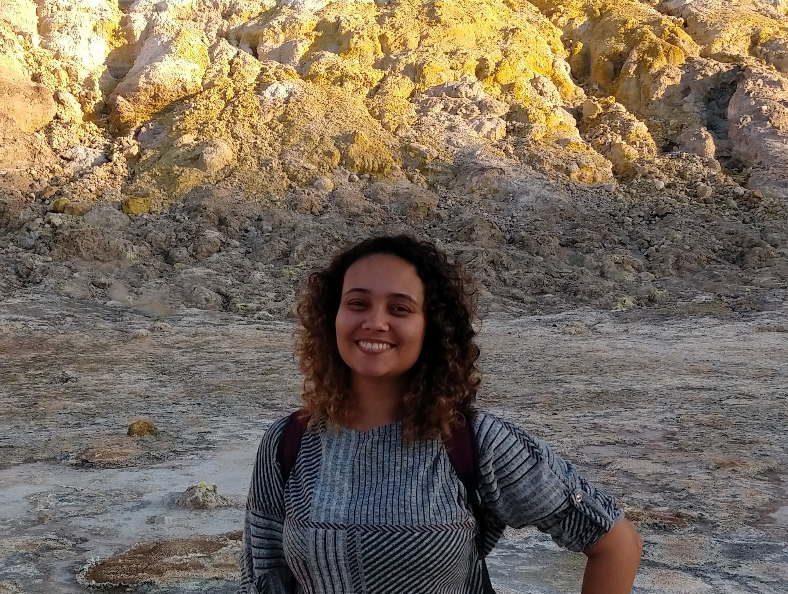

About Me
Olá! I'm Jéssica Gonçalves, a Brazilian geologist with a Major in Earth and Planetary Sciences, and the Environment (with highest honour) from the renowned Erasmus Mundus Joint Master Degree Pangea. I believe in the transformative potential of geotechnologies, and I have a keen interest in their application in land use planning and nature conservation, in addition to the valorization of Earth's geological heritage. I am also interested in the intersection of geosciences and programming to enhance my skills in spatial analysis and approach complex challenges with a multidimensional perspective.
Currently, I am on a challenging and exciting journey toward a Ph.D. in Geosciences. I will be exploring the beautiful rural landscape of the Côa Valley, a UNESCO World Heritage site (read more).
Feel free to explore my experiences, research, and projects. Whether you share a passion for the Earth sciences, someone intrigued by geoconservation, or a potential collaborator, I invite you to connect. Let's exchange ideas and collaborate!